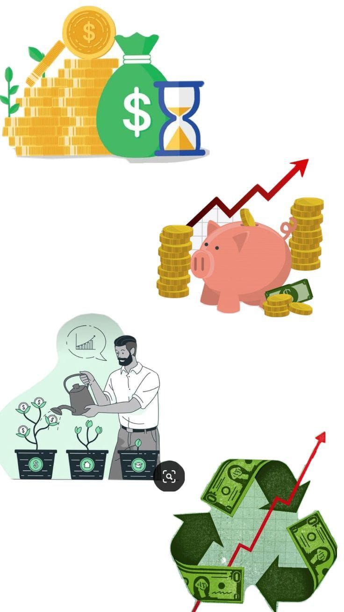
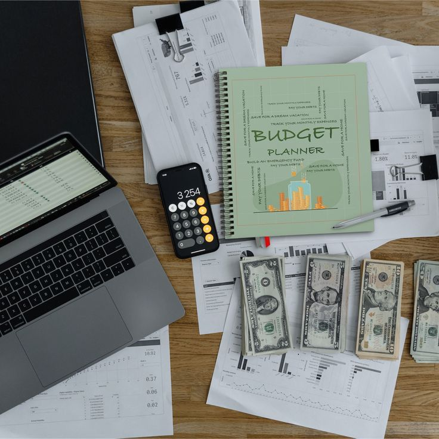

OBJETIVOS
OBJETIVO GENERAL
Enseñar a los adolescentes y niños a cómo manejar su dinero, vamos a enseñarle con asesoría sobre cómo se comporta el dinero y que tan fácil se puede gastar y ahorrar todo esto va para los adolescentes entre 12 a 14 años y a los menores de 9 a 11 años simplemente una forma eficaz de manejar el dinero ya cuando los adolescentes tengan una comprensión avanzada podrían invertir en bolsa que cuando sean adultos tenga ya una compresión sólida sobre la planeación financiera y que tome decisiones financieras con confianza y responsable. (chatGPT, 2025)

Educación Financiera Básica
Proporcionar conocimientos fundamentales sobre finanzas personales, incluyendo la importancia del presupuesto, el ahorro y la inversión.

Presupuesto Personal
Enseñar a los jóvenes a crear y seguir un presupuesto que les permita gestionar sus ingresos y gastos de manera equilibrada.

Ahorro pasivos y activos
Destacar la importancia del ahorro para emergencias y objetivos a corto y largo plazo, como la educación.
Inversión
Introducir conceptos medios de inversión y explicar cómo pueden empezar a invertir desde jóvenes para aprovechar el interés compuesto.